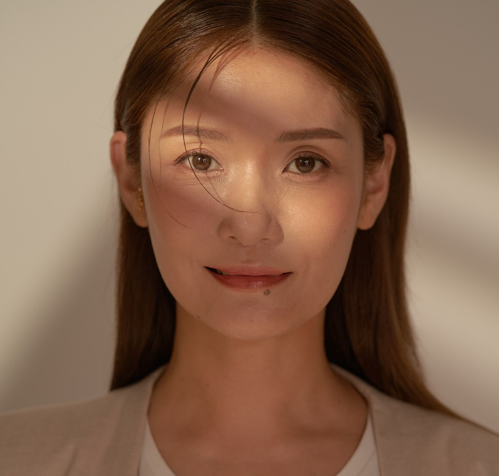
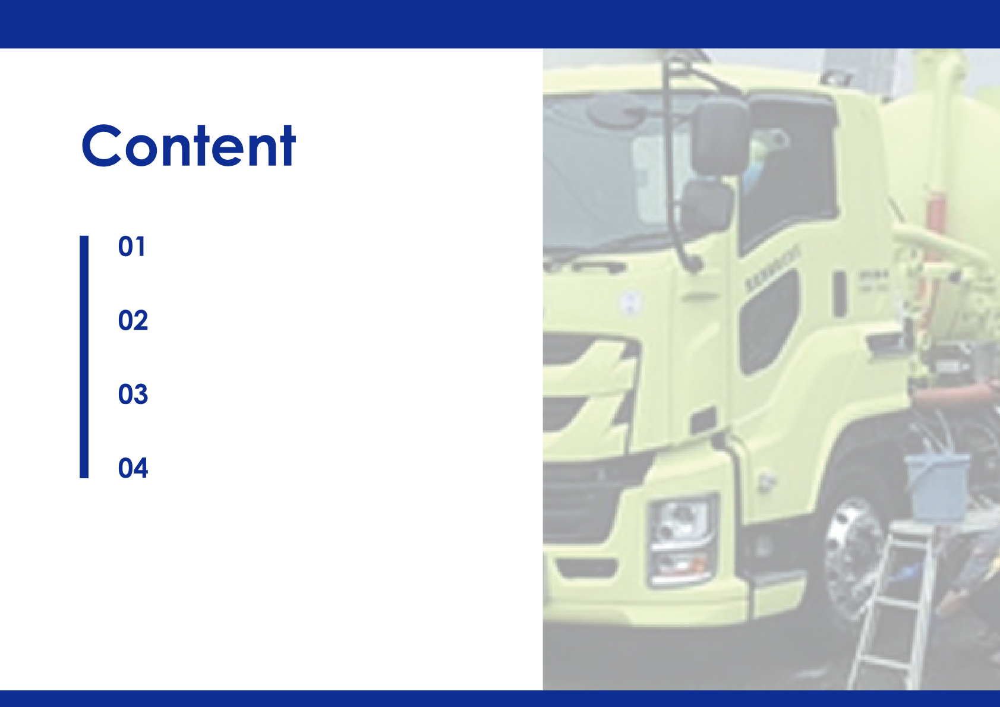
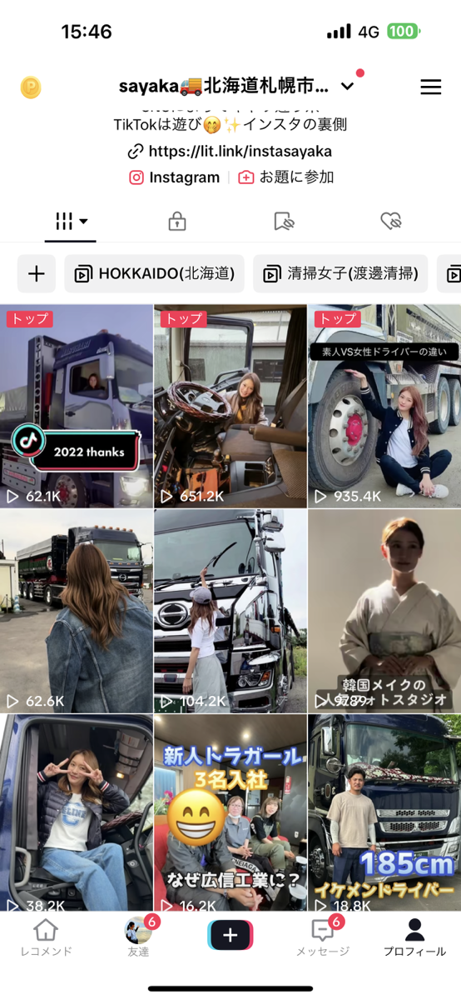
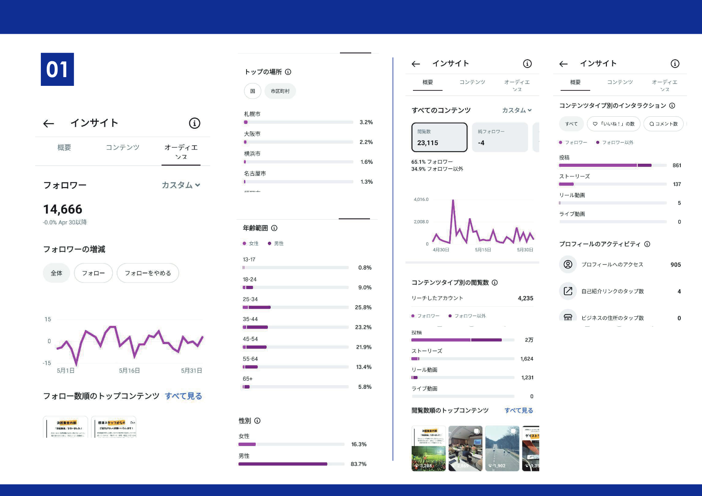

SNS運用代行
Instagram・TikTok等のアカウント運用、投稿企画、分析・改善まで代行します。
Representative

代表取締役 三好 清佳
Sayaka Miyoshi / CEO, MIRUS Inc.
Services
株式会社MIRUSが提供する主なサービスです。SNS運用・映像制作・PR支援を中心に事業を行っています。
Instagram・TikTok等のアカウント運用、投稿企画、分析・改善まで代行します。
リール動画・ショート動画・PR動画の企画・撮影・編集を行います。
取材・撮影・編集を通じ、組織の魅力を伝えるコンテンツを制作します。
案件に適したインフルエンサーの選定から企画・投稿まで支援します。
海外インフルエンサーの北海道来訪時の同行・通訳・撮影サポートを行います。
観光施設・飲食店・地域ブランドの認知拡大と来訪促進を支援します。
Works
株式会社MIRUSとして実施している支援事例です。

採用広報・企業ブランディング・SNS運用支援
Activity
関連する活動・情報発信
北海道内の企業向けに、SNS運用代行、リール動画制作、採用広報・企業ブランディングを提供しています。
北海道未来図鑑の運営に関わり、北海道の企業・取り組みの紹介・発信を行っています。
代表取締役が運営するInstagramアカウント @insta.sayaka を通じ、北海道の魅力や事業活動を発信しています。


Company
Contact
SNS運用・映像制作・インフルエンサーマーケティング・観光PRに関するご相談は、お問い合わせフォームよりお気軽にご連絡ください。
External Links